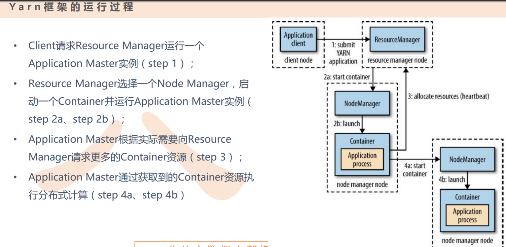
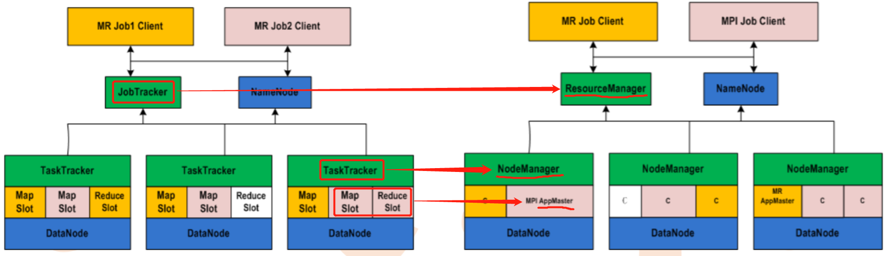

Hadoop 2.X 配置
01. Hadoop 2.6.1
- Repo Point
hadoop-2.6.1.tar.gz
Linux环境配置
1-1 防火墙 & 主机名
service iptables status
chkconfig iptables off
systemctl status firewalld
systemctl stop firewalld
# 永久关闭
systemctl disable firewalld
chkconfig iptables off
# CentOS 6
# service iptables status
# service iptables stop
# chkconfig iptables off
# 临时关闭内核防火墙
setenforce 0
# 关闭selinux内核防火墙
vim /etc/selinux/config
# config
SELINUX=disabled
######
# 修改各主机名
vim /etc/sysconfig/network
# network
NETWORKING=yes
HOSTNAME=master
######1-2 SSH互信（通信基本）
# 生成密钥对
# 当前node为pp-web01！！！
[root@sh02-oscar-hapomc-pp-web01 ~] ssh-keygen -t rsa
# 或
# [root@sh02-oscar-hapomc-pp-web01 ~] ssh-keygen -t rsa -P "" -f ~/.ssh/id_rsa
Generating public/private rsa key pair.
Enter file in which to save the key (/root/.ssh/id_rsa): ⬅ 回车
Enter passphrase (empty for no passphrase): ⬅ 回车
Enter same passphrase again: ⬅ 回车
Your identification has been saved in /root/.ssh/id_rsa.
Your public key has been saved in /root/.ssh/id_rsa.pub.
The key fingerprint is:
SHA256:8stOB0k90dcNBcJomZAgFtDCdWTJ3JTGLZK3METx45I root@sh02-oscar-hapomc-pp-web01.novalocal
# The key's randomart image is:
+---[RSA 2048]----+
| ..+=BOOo=.*. o=o|
| o..+O.O.*.o.. o|
| . *++o . |
| +.o . |
| E S .. |
| + . |
| o . |
| o o |
| .+ |
+----[SHA256]-----+
# 公钥加入授权码内，用于后续分发
[root@sh02-oscar-hapomc-pp-web01 ~] cat /root/.ssh/id_rsa.pub > /root/.ssh/authorized_keys
# 编辑IP映射（无vim，vi替代）
[root@sh02-oscar-hapomc-pp-web01 ~] vim /etc/hosts
# hosts
hosts hosts.allow hosts.deny
127.0.0.1 localhost localhost.localdomain localhost4 localhost4.localdomain4
::1 localhost localhost.localdomain localhost6 localhost6.localdomain6
10.73.8.34 webpp34
10.72.8.25 web25
10.72.8.56 web56
######
# 分开公钥至子节点
[root@sh02-oscar-hapomc-pp-web01 ~] scp ~/.ssh/authorized_keys root@web25:~/.ssh/
The authenticity of host 'web25 (10.72.8.25)' can't be established.
ECDSA key fingerprint is SHA256:Rz6Sn/xaHpGzQpZ6nFyPc+0bmppcNDAkdAj+x3VQBPE.
ECDSA key fingerprint is MD5:8a:51:3a:11:f3:2e:de:96:2d:83:ba:18:37:31:e2:a8.
Are you sure you want to continue connecting (yes/no)? yes ⬅ 首次互信连接需要确认known_host并输入对应子节点用户密码
Warning: Permanently added 'web25,10.72.8.25' (ECDSA) to the list of known hosts.
root@web25's password: ⬅ 输入密码
Last login: Mon Dec 30 03:05:25 2019 from 10.13.88.38
authorized_keys 100% 423 149.8KB/s 00:00
# 同样步骤，分发主节点的hosts文件至子节点
[root@sh02-oscar-hapomc-pp-web01 ~] scp /etc/hosts root@web25:/etc/hosts
hosts 100% 211 64.2KB/s 00:00
# 切换至子节点处看下发送结果
[root@sh02-oscar-hapomc-pp-web01 ~] ssh web25
Last login: Mon Dec 30 03:14:32 2019 from webpp34
# 这里看主机名确认已切换至子节点，查看下分发结果
[root@sh02-oscar-hapomc-prod-web01 ~] nl /etc/hosts
[root@sh02-oscar-hapomc-prod-web01 ~] nl ~/.ssh/authorized_keys
1 ssh-rsa AAAAB3NzaC1yc2EAAAADAQABAAABAQC9skly4Dl68BeKuAZdevQEgxylu1HQINn8QrnEx3DJGL43Jo3nIYbC0GAflUHzRRFBb4JLrICm63FuTzwZMwiBK1fr339NZqMyBk2hUqwAY8u1eG/JagGGsXsNSpaCwVEsGBw5OnC2SGxLIwfINZD7zH8dauONvoCqIe0SH44q0eKWr5nHdybOwdq3Q6X3lTuNI91QxP4LkrtyZG07j/b4DOCHLT4KxDYur69zB64vOTboDiTBfqP/syGkRXsGnJmZt/s3Uk0DEGoU6ZReYBvbK+cr43UPnQiSKxieceKm884DyVZRPQZcmOydKPWEFcCsaDafiR+2lwfwDUxDEQu7 root@sh02-oscar-hapomc-pp-web01.novalocal
# 至此，完成pp-web01至prod-web01的公钥分发（即单向互信，pp-web01可以免密连接prod-web01）
# 同理，完成prod-web01至pp-web01的公钥分发（完成双向互信）
[root@sh02-oscar-hapomc-prod-web01 ~] ssh-keygen -t rsa
Generating public/private rsa key pair.
Enter file in which to save the key (/root/.ssh/id_rsa):
Enter passphrase (empty for no passphrase):
Enter same passphrase again:
Your identification has been saved in /root/.ssh/id_rsa.
Your public key has been saved in /root/.ssh/id_rsa.pub.
The key fingerprint is:
SHA256:kKlNCwZJ24AKh9DN0tnvn7XdvawYSr9Lf10a1xIG2PA root@sh02-oscar-hapomc-prod-web01.novalocal
# The key's randomart image is:
+---[RSA 2048]----+
|o=+= o .+ |
|+ === .o ..o |
|o...+ =. E. |
|. . = o. o |
| . o.S . ..|
| . . o +|
| o = o *+|
| . * = +.+|
| . =oooo.|
+----[SHA256]-----+
# 这里用追加>>，不要用覆盖！！！
[root@sh02-oscar-hapomc-prod-web01 ~] cat ~/.ssh/id_rsa.pub >> ~/.ssh/authorized_keys
# 查看赋权码文件内的结果，有两组公钥
[root@sh02-oscar-hapomc-prod-web01 ~] nl ~/.ssh/authorized_keys
1 ssh-rsa AAAAB3NzaC1yc2EAAAADAQABAAABAQC9skly4Dl68BeKuAZdevQEgxylu1HQINn8QrnEx3DJGL43Jo3nIYbC0GAflUHzRRFBb4JLrICm63FuTzwZMwiBK1fr339NZqMyBk2hUqwAY8u1eG/JagGGsXsNSpaCwVEsGBw5OnC2SGxLIwfINZD7zH8dauONvoCqIe0SH44q0eKWr5nHdybOwdq3Q6X3lTuNI91QxP4LkrtyZG07j/b4DOCHLT4KxDYur69zB64vOTboDiTBfqP/syGkRXsGnJmZt/s3Uk0DEGoU6ZReYBvbK+cr43UPnQiSKxieceKm884DyVZRPQZcmOydKPWEFcCsaDafiR+2lwfwDUxDEQu7 root@sh02-oscar-hapomc-pp-web01.novalocal
2 ssh-rsa AAAAB3NzaC1yc2EAAAADAQABAAABAQDwlTic1GjMw9YiMnwsJ4f/94S30fLD+0BhX0691CwIvEBFbWTd4Hn60f7/wcuChck1Q9ICcLS6fd9jM5GoOxmyIwQ6P3+mCweexcaKyS18I6o2PjCTdV0LWooLlTIzg9N00frtw8e46dEtbY08WgS+xzASv3Dcw/WDjhqokCxaSbFPPMzWT8pd8r4aWWNsWvtINe84FW9k0YlGYUxmEw2kwuT6aJJgYSrEkwMRyw8Iw+HzoBexr6KQc85eCjEYFieiqLg3HGvenf+VP0yht20wbRxxYU1R/0NYNiClSnTazl6G9cFVEHQ39FgNP+LR+yLnCCrWATC2d6UI2ynXDqH9 root@sh02-oscar-hapomc-prod-web01.novalocal
# 重复上述操作，完成子节点prod-web01至pp-web01的公钥分发
[root@sh02-oscar-hapomc-prod-web01 ~] scp ~/.ssh/authorized_keys root@webpp34:~/.ssh/
# Status: OK1-3 挂载yum源/LVM（补充，非相关）
- yum源
# 分发镜像
[root@sh02-oscar-hapomc-pp-web01 mnt] scp /mnt/CentOS-7-x86_64-DVD-1908.iso root@web25:/mnt
[root@sh02-oscar-hapomc-pp-web01 mnt] mkdir -p /mnt/cdrom
[root@sh02-oscar-hapomc-pp-web01 mnt] cp /etc/yum.repo.d/CentOS-Base.repo /etc/yum.repo.d/CentOS-Base.repo.bak
[root@sh02-oscar-hapomc-pp-web01 mnt] vim /etc/yum.repo.d/CentOS-Base.repo
# CentOS-Base.repo
[CentOS-7]
name=CentOS
baseurl=file:///mnt/cdrom
enabled=1
gpgcheck=0
# gpgkey=file:///mnt/cdrom/RPM-GPG-KEY-CentOS-7
######
mount -o loop -t iso9660 /mnt/CentOS-7-x86_64-DVD-1908.iso /mnt/cdrom/
scp /etc/yum.repos.d/CentOS-Base.repo root@web25:/etc/yum.repos.d/
# 并在其它节点执行光盘挂载
# scp /etc/yum.repos.d/CentOS-Base.repo root@web56:/etc/yum.repos.d/
# 确认分发结果
# nl /etc/yum.repos.d/CentOS-Base.repo- LVM
Tips若没有lvm相关命令，可以挂载对应系统磁盘，yum -y install lvm2
# 查看磁盘情况
fdisk -l# 查看物理卷/逻辑卷组/逻辑卷情况
pvdisplay
vgdisplay
lvdisplay
# 创建逻辑卷组PV，假设这里的磁盘叫/dev/vdb1
pvcreate /dev/vdb1
pvdisplay
# 基于PV新建VG，有多个的话就直接加在后面
vgcreate vg1 /dev/vdb1 /dev/vdb2
# 扩展现有VG
vgextend vg1 /dev/vdb1
# 基于VG创建逻辑卷LV
lvcreate -n lv1 -L 10G vg1
# 格式化并挂载
mkfs.xfs /dev/vg1/lv1
mkdir /lvm # 确认lvm为新的空路径，不可用非空路径
mount /dev/vg1/lv1 /u1
# 设置开机挂载
vim /etc/fstab
/dev/vg1/lv1 /lvm xfs defaults 0 0TipsCentOS 7：mkfs.xfs CentOS6：mkfs.ext4（resize2fs）
02. 环境配置（部分Linux基础环境配置暂未罗列，如host、jdk等）
环境包 rz 至相关路径，分流至其它节点：
2-1 组件&源码分发
# 文件解压：hadoop-2.6.1/etc/hadoop
cd /usr/local/src/
tar -xvf hadoop-2.6.1.tar.gz2-2 当前用户环境变量
vim /etc/hosts
# hosts
192.168.73.10 master
192.168.73.11 slave1
192.168.73.12 slave2
192.168.73.13 slave3
######
vim ~/.bashrc
# ~/.bashrc
# SET JAVA PATH
export JAVA_HOME=/usr/local/src/jdk1.8.0_201
export JRE_HOME=${JAVA_HOME}/jre
export CLASSPATH=.:${JAVA_HOME}/lib:${JRE_HOME}/lib
export PATH=${JAVA_HOME}/bin:$PATH
# SET HADOOP PATH
export HADOOP_HOME=/usr/local/src/hadoop-2.6.1
export PATH=$PATH:$HADOOP_HOME/bin
# SET HIVE PATH
export HIVE_HOME=/usr/local/src/apache-hive-1.2.2-bin
export PATH=$PATH:$HIVE_HOME/bin
# SET SCALA PATH
export SCALA_HOME=/usr/local/src/scala-2.11.8
export PATH=$PATH:$SCALA_HOME/bin
# SET INI PATH
export INI_PATH=/usr/local/src
# SET SPARK PATH
export SPARK_HOME=/usr/local/src/spark-2.0.2-bin-hadoop2.6
export PATH=$PATH:$SPARK_HOME/bin:$SPARK_HOME/sbin
######
# 本地生效
source ~/.bashrc
scp ~/.bashrc root@slave1 ~/.bashrc
scp ~/.bashrc root@slave2 ~/.bashrc
# 节点分发&生效
ssh slave1
source ~/.bashrc
exit
ssh slave2
source ~/.bashrc2-3 配置文件修改&相关文件夹创建
cd /usr/local/src/hadoop-2.6.1/etc/hadoop
vim hadoop-env.sh ⬅ 配置JAVA环境
# hadoop-env.sh
export JAVA_HOME=/usr/local/src/jdk1.8.0_201
######
# yarn-env.sh貌似我自己没改配置
vim yarn-env.sh
# yarn-env.sh
export JAVA_HOME=/usr/local/src/jdk1.8.0_152
######
vim slaves ⬅ DataNode节点
# 配置DN节点
# slaves
slave1
slave2
######vim core-site.xml ⬅ 核心配置文件
# 配置master节点IP及Hadoop临时文件根目录tmp
# core-site.xml
<configuration>
<property>
<name>fs.defaultFS</name>
<value>HDFS://master:9000</value>
<description>默认文件系统为HDFS文件系统&NN节点位置&对应网络端口</description>
</property>
<property>
<name>hadoop.tmp.dir</name>
<value>file:/usr/local/src/hadoop-2.6.1/tmp/</value>
</property>
</configuration>vim hdfs-site.xml ⬅ 配置HDFS相关的参数
# 配置NameNode/DataNode/Replication（备份）文件目录
# hdfs-site.xml
<configuration>
<property>
<name>dfs.namenode.secondary.http-address</name>
<value>master:9001</value>
<description>NN助理节点位置&对应网络端口</description>
</property>
<property>
<name>dfs.namenode.name.dir</name>
<value>file:/usr/local/src/hadoop-2.6.1/dfs/name</value>
</property>
<property>
<name>dfs.datanode.data.dir</name>
<value>file:/usr/local/src/hadoop-2.6.1/dfs/data</value>
</property>
<property>
<name>dfs.replication</name>
<value>1</value>
</property>
<property>
<name>dfs.permissions</name>
<value>false</value>
</property>
</configuration>
######vim mapred-site.xml ⬅ mapreduce
# mapred-site.xml
<configuration>
<property>
<name>mapreduce.framework.name</name>
<value>yarn</value>
</property>
<property>
<name>mapreduce.jobhistory.address</name>
<value>http://master:10020</value>
</property>
<property>
<name>mapreduce.jobhistory.webapp.address</name>
<value>http://master:19888</value>
</property>
</configuration>
######vim yarn-site.xml ⬅ YARN（RM）配置
# yarn-site.xml
<property>
<name>yarn.nodemanager.aux-services.mapreduce.shuffle.class</name>
<value>org.apache.hadoop.mapred.ShuffleHandler</value>
</property>
<property>
<name>yarn.resourcemanager.address</name>
<value>master:8032</value>
<description>Yarn(RM)所在节点位置&对应网络端口</description>
</property>
<property>
<name>yarn.resourcemanager.scheduler.address</name>
<value>master:8030</value>
</property>
<property>
<name>yarn.resourcemanager.resource-tracker.address</name>
<value>master:8035</value>
</property>
<property>
<name>yarn.resourcemanager.admin.address</name>
<value>master:8033</value>
</property>
<property>
<name>yarn.resourcemanager.webapp.address</name>
<value>master:8088</value>
</property>
<!-- 关闭虚拟内存检查-->
<property>
<name>yarn.nodemanager.vmem-check-enabled</name>
<value>false</value>
</property>
</configuration>
####### 根据上述配置的各个路径，创建好对应的文件目录
mkdir /usr/local/src/hadoop-2.6.1/tmp
mkdir -p /usr/local/src/hadoop-2.6.1/dfs/name
mkdir -p /usr/local/src/hadoop-2.6.1/dfs/data2-4 主节点配置好的 Hadoop 源码分发至集群其余节点
scp /usr/local/src/hadoop-2.6.1 root@slave1:/usr/local/src/hadoop-2.6.1
scp /usr/local/src/hadoop-2.6.1 root@slave2:/usr/local/src/hadoop-2.6.103. Hadoop集群初始化/启动/关闭
集群格式化/集群启动/JAVA进程查看/集群关闭
Tips 初始化只需要做一次！！！
3-1 格式化Hadoop(NN)
cd $HADOOP_HOME/bin
hadoop namenode -format
cd $HADOOP_HOME/sbin
./start-all.sh
# 关闭集群
cd $HADOOP_HOME/sbin
./stop-all.ssh3-2 jps查看集群状态
# master
[root@master bin]# jps
2784 NameNode ⬅ NN
3122 ResourceManager ⬅ RM
13827 Jps
6853 Master ⬅ (这个为Spark集群启动标识，Hadoop启动时不包括)
2943 SecondaryNameNode ⬅ Secondary Bak NN
# slave1/2
[root@slave1 ~]# jps
17378 nodemanager ⬅ NM
17270 DataNode ⬅ DN
18122 Jps04. HDFS & YARN
HDFS架构及变化
4-1 HDFS架构（分布式存储）
狭义Hadoop 也就是指Hadoop2.x下的4个组件，Common（RPC框架）/HDFS/YARN/MapReduce.
Block Hadoop 2.x中，默认Block大小为：1 Block = 128MB；Hadoop 1.x中默认Block大小为：1 Block = 64MB.NameNode 集群老大，处理客户端的读写请求，NN的内存元信息中，包含文件路径、文件副本数(根据配置或-setrep来确定副本数)、blockid、每个Block所在DataNode的信息（动态），NN主要处理HDFS中的两个重要关系：
- 元信息持久化，持久化到物理内存中，也就是命名空间镜像
fsimage，但不包含每个Block的位置信息（这也就是为什么集群在启动初期会进入安全模式的原因，因为集群启动时，NN读取的fsimage中不包含Block所在DN的具体位置），存放元信息的文件是fsimage，而系统运行期间所有对元信息的操作都保存在内存中，并被持久化到另一个文件edits（编辑日志）中，两者合二为一提供了HDFS的第一重要关系. - （持久）管理文件系统目录树，即文件系统目录与数据块的对应关系（持久化到物理内存文件
fsimage中），简单来说就是HDFS目录树/元信息和文件数据块的索引. - （动态）DN和数据块的对应关系（不会持久化到物理内存文件中，NN启动时，由DN动态上报而得的第二个重要关系），简单来说就是用来记录块数据（Block）所在DN的具体位置（形似索引）；同时NN还可以通过DN获取HDFS整体运行状态的一些信息.
SecondNameNode 不算是NN的备份节点，只是协助NN，分担压力，SNN会定时去NN中获取edits，更新至SNN中的fsimage中，SNN一旦有了新的fsimage，便会以fsimage.ckpt的形式覆盖NN中的fsimage（合并），便于NN在下次启动时使用，减少重启时间；同理，合并后的fsimage可以用来恢复故障的NN，但由于SNN生成的fsimage本身就具有滞后性，故存在数据丢失的风险.
DataNode 整个集群真正的数据块，负责存储数据块，负责为系统客户端提供数据块的读写服务，负责各个DN间的通信（副本处理，replication）；心跳机制定期报告文件块列表信息至NN，确保DN正常存活.
4-2 四个核心机制
心跳机制
- NN启动后，开启IPC（通信方式）.
- DN需要连接NN，并在特定间隔时间下(3s)汇报自身的状况给NN.
- NN发布命令也是通过心跳发送给DN.
- Namenode 感知到 Datanode 掉线死亡的时长计算：HDFS 默认的超时时间为10分钟+30 秒.
- 计算公式为：timeout = 2 * dfs.namenode.heartbeat.recheck-interval + 10 * dfs.heartbeat.interval.
- 默认的
heartbeat.recheck.interval大小为5分钟，dfs.heartbeat.interval默认的大小为3秒. - 需要注意的是 hdfs-site.xml 配置文件中的heartbeat.recheck-interval的单位为毫秒，dfs.heartbeat.interval 的单位为秒.
安全模式
副本存放策略
- 高可靠：切分+副本；首先是数据按照Block块大小切分，并按照副本配置（dfs.replication = 3）或临时指定（-setrep），生成各自的副本.
- 数据按副本数量进行备份的过程是动态的，什么意思呢，就是说我们定义副本数为3时，则系统会在备份不足3的时候，再新添新的副本数据.
负载均衡
4-3 YARN VS Hadoop 1.x（运算资源调度）
YARN (RM) Cluster Resource Manager 集群Hadoop1.x中的集群管理器JobTracker的替代者.NodeManager (NM) TaskTracker的替代者，各个节点上的NM与RM通过心跳通信，以确保自身的健康性.ApplicationMaster(AM) 一个专用且短暂的JobTracker，RM收集来自NM的状态信息，选择合适的NM启动Container（任务的运行资源<节点/内存/CPU>）并运行AM；而AM会根据实际情况向RM申请更多Container资源，以完成分布式计算.Container YARN中资源的抽象封装，包含某个节点上一定量的资源（CPU和内存两类资源）.

4-4 Tips 传统JobTracker的资源管理/任务协调被分开为两种不同类型的进程来反馈.
- 集群资源管理：也就是ResourceManager（RM/YARN）.
- 任务协调：对于提交给集群的每个
Application（2.X中Job的概念被Application替代），都会启动一个专用且短暂的JobTracker来控制，这类专用且短暂的管理器就是Hadoop 2.x中的ApplicationMaster (App Mstr)，从属节点的AM由各Slaves上的NodeManager（TaskTracker）启动.
HDFS基本操作
4-5 命中率较高且暂未练习过的shell命令
# 功能：设置 HDFS 中文件的副本数量
hdfs dfs -setrep 3 /aaa/jdk.tar.gz
# 功能：查看 dfs 集群工作状态的命令
hdfs dfsadmin -report
# 安全模式
hdfs dfsadmin -safemode get/leave/enter/wait
# 上传
hdfs dfs -put /data/hive/student.txt /bbb/jdk.tar.gz.2
# Drop
hdfs dfs -rm /data/hive_hdfs/student.txt
>>20/02/14 17:52:02 INFO fs.TrashPolicyDefault: Namenode trash configuration: Deletion >>interval = 0 minutes, Emptier interval = 0 minutes.
>>Deleted /data/hive_hdfs/student.txt
# 查询并杀死任务
hadoop job -list # version < 2.3.0
hadoop job -kill $Application-Id
yarn application -list # version > 2.3.0
yarn application -kill $Application-Id# 常用命令参数介绍
-help
# 功能：输出这个命令参数手册
hadoop -help
hadoop fs -help
hadoop fs -help ls
-ls
# 功能：显示目录信息
hadoop fs -ls HDFS://master:9000/
hadoop fs -ls / # 这些参数中，所有的 HDFS 路径都可以简写成 hadoop fs -ls / 等同上条命令的效果
-mkdir
# 功能：在 HDFS 上创建目录
hadoop fs -mkdir -p /aa/bb/cc/dd
-put
# 功能：等同于 -copyFromLocal 从本地上传文件至HDFS
⬇ 本地路径 ⬇ HDFS路径
hadoop fs -put /aaa/jdk.tar.gz /bbb/jdk.tar.gz.2
-get
# 功能：等同于 copyToLocal，就是从 HDFS 下载文件到本地
hadoop fs -get /aaa/jdk.tar.gz
-getmerge
# 功能：合并下载多个文件
# 例如：getmerge 如 HDFS 的目录 /aaa/下有多个文件:log.1, log.2,log.3,...
hadoop fs -getmerge /aaa/log.* ./log.sum
-cp
# 功能：从 HDFS 的一个路径拷贝 HDFS 的另一个路径
hadoop fs -cp /aaa/jdk.tar.gz /bbb/jdk.tar.gz
-mv
# 功能：在 HDFS 目录中移动文件
hadoop fs -mv /aaa/jdk.tar.gz /ccc
-rm
# 功能：删除文件或文件夹
hadoop fs -rm -r /aaa/bbb/
-rmdir
# 功能：删除空目录
hadoop fs -rmdir /aaa/bbb/ccc
-moveFromLocal
# 功能：从本地剪切到 HDFS
hadoop fs - moveFromLocal /data/hadoop/a.txt /aa/bb/cc/dd
-moveToLocal
# 功能：从 HDFS 剪切到本地
hadoop fs - moveToLocal /aa/bb/cc/dd /home/hadoop/a.txt
-copyFromLocal
# 功能：从本地文件系统中拷贝文件到 HDFS 文件系统去
hadoop fs -copyFromLocal ./jdk.tar.gz /aaa/
-copyToLocal
# 功能：从 HDFS 拷贝到本地
hadoop fs -copyToLocal /aaa/jdk.tar.gz
-appendToFile
# 功能：追加一个文件到已经存在的文件末尾
hadoop fs -appendToFile ./hello.txt HDFS://hadoop-server01:9000/hello.txt
可以简写为：
hadoop fs -appendToFile ./hello.txt /hello.txt
-cat
# 功能：显示文件内容
hadoop fs -cat /hello.txt
-tail
# 功能：显示一个文件的末尾
hadoop fs -tail /weblog/access_log.1
-text
# 功能：以字符形式打印一个文件的内容
hadoop fs -text /weblog/access_log.1
-chgrp
-chmod
-chown
# 功能： linux 文件系统中的用法一样，对文件所属权限
hadoop fs -chmod 666 /hello.txt
hadoop fs -chown someuser:somegrp /hello.txt
-df
# 功能：统计文件系统的可用空间信息
hadoop fs -df -h /
-du
# 功能：统计文件夹的大小信息
hadoop fs -du -s -h /aaa/*
-count
# 功能：统计一个指定目录下的文件节点数量
hadoop fs -count /aaa/
-setrep
# 功能：设置 HDFS 中文件的副本数量
hadoop fs -setrep 3 /aaa/jdk.tar.gz
# 补充：查看 dfs 集群工作状态的命令
HDFS dfsadmin -report本博客所有文章除特别声明外，均采用 CC BY-SA 3.0协议 。转载请注明出处！